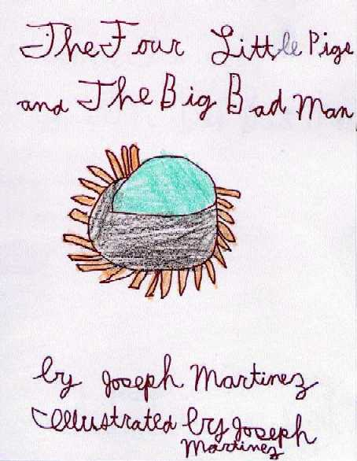
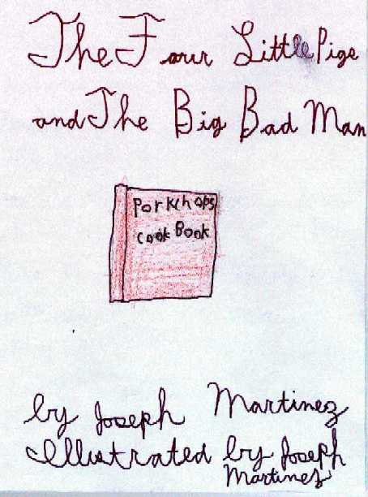
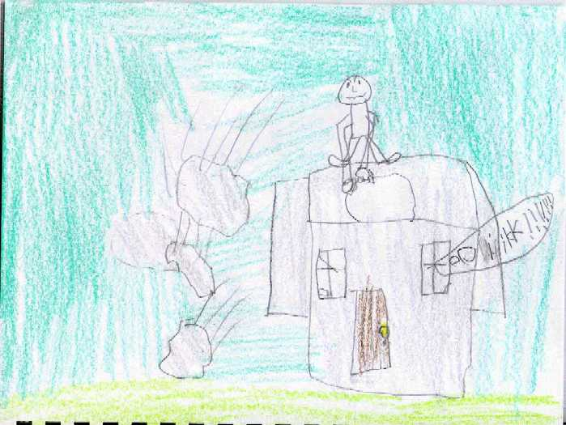
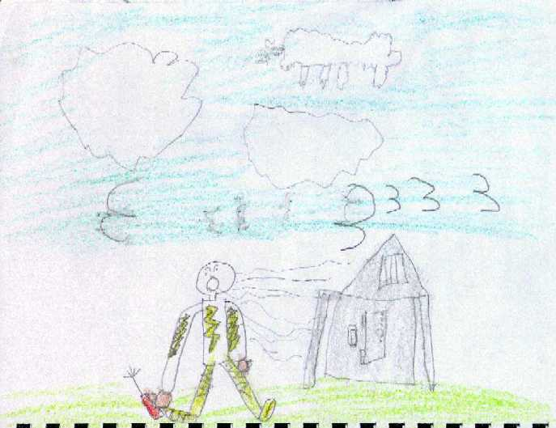
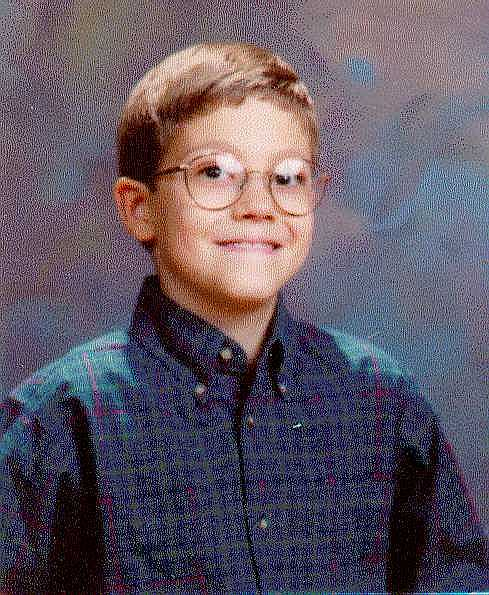
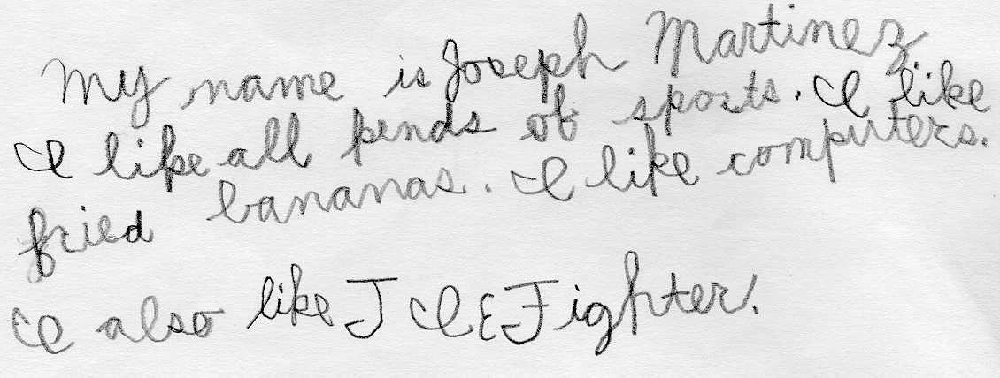

(back)

© 1997 J.S.M. Publishing

Once upon a time, there was a mom pig and her children. One day the mom said to her children, "It is time for you to live on your own but beware of the big bad man! He loves pork chops! Do you know what pork chops are? Pigs! So stay away from him." So they set off.
The first little pig saw a man with cement. "May I have some cement?" said the first little pig. So the pig built a house.
Now, the second little pig saw a man carrying steel. "May I have some steel?" So the pig built a house.

Now the third little pig saw a man with titanium. So he said, "May I have some titanium?" So he built his house.
Now, the fourth was smart. He stayed and took care of his mother.
One day when the first little pig was playing, he heard a knock on the door. It was the big bad man. "Little pig, let me in." "No, no! Not for a million bucks. "Then I'll huff and I'll puff and I'll blow your house down." He tried but he couldn't budge it. But he wasn't the big bad man for nothing. So he went and got a jack hammer and broke in. He ate the pig.

Now the second pig was playing the piano when a knock cut him off. It was the big bad man. "Let me in." "No, no, I won't let you in." "Then I'll huff and I'll puff and I'll blow your house in." So he tried but it didn't budge. But, he wasn't the big bad man for nothing. So went and got a steel cutter and broke in. He ate the pig.
Now, the third little pig was playing tennis until a knock on the door. He said, "Who is it?" "It is your mother." "No no, you're the big bad man!" "You're right," he said. So he huffed and puffed but he couldn't make it budge. He got a stick of dynamite and broke in and ate the pig.
The end.

